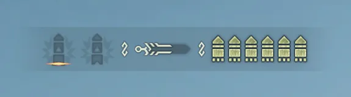
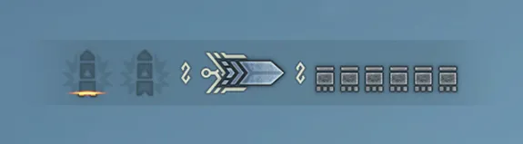
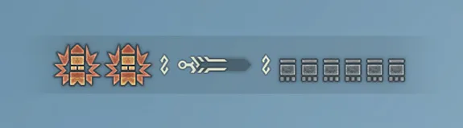

건랜스는 랜스의 방어력에 ‘포격’이라는 독특한 화력을 결합한 무기로,
찌르기와 함께 폭발을 일으켜 몬스터를 압박할 수 있는 전술적인 무기입니다.
‘용격포’, ‘풀버스트’ 등 전용 기술이 다양하고, 차지와 리로드 시스템을 통해 전략적으로 운용할 수 있습니다.
공격 루틴이 복잡하고 포격 타입에 따라 운용 방식이 다르지만, 마스터하면 매력적인 전투가 가능합니다.

건랜스
특성 요약
| 무기 | 상쇄 | 가드 | 전용자원 | 난이도 |
|---|---|---|---|---|
| 건랜스 | ❌ | ✅ | ✅ | 2 |
-
포격 타입
포격을 쏠 때 필요한 탄. 포격을 쏠 때마다 소비하며 리로드나 퀵 리로드로 회복한다.
-
포격 타입
포격을 쏠 때 필요한 탄. 포격을 쏠 때마다 소비하며 리로드나 퀵 리로드로 회복한다.
-
용항탄
'일반', '확산', '방사'로 타입이 나뉜다.
'일반'은 장탄 수가 많다. '확산'은 포격과 용격포 위력이 높다. '방사'는 용항포 위력이 높다. -
용격포
화속성을 포함한 강력한 육질을 무시 대미지를 주는 용격포. 소비한 용격 게이지는 자동 회복되며, 공격이 히트할 때도 회복된다.
두 개까지 쌓을 수 있으며 용격포를 쏘면 하나 소비한다.
| 버튼 역할 | 조작 | 설명 |
|---|---|---|
| 수평찌르기 I | Y / 좌클릭 |
앞을 찌르는 공격입니다. 공격 후 Y로 수평찌르기 II로 파생되고, 수평찌르기 II 후 Y로 후려치기로 파생됩니다. |
| 내디뎌찌르기 | LS 상 + Y / W 길게 + 좌클릭 |
앞으로 내디디면서 찌르는 공격입니다. 공격 후 Y + B로 내려치기로 파생, 내려치기 후 B로 풀버스트, Y로 후려치기로 각각 파생됩니다. |
| (내디뎌찌르기 파생) 내려치기 | Y + B / 좌클릭 + 우클릭 | 강하게 내려치는 공격입니다. |
| (내려치기 파생) 풀버스트 | B / 우클릭 | 포탄을 한 번에 발사하는 공격입니다. |
| (내려치기 파생) 후려치기 | Y / 좌클릭 | 강하게 후려치는 공격입니다. |
| 용항포 | 후려치기 후 Y / 좌클릭 |
용항포를 쏘는 공격입니다. 명중 부위에 연속 대미지를 주며, 마지막 폭발은 몬스터의 육질을 무시하는 불속성을 포함합니다. |
| 용항 풀버스트 | 후려치기 후 Y + B / 좌클릭 + 우클릭 |
남아 있는 용항포와 포탄을 모두 발사하는 공격입니다. 용항 풀버스트 후 Y 또는 B를 누르면 연장 용항 풀버스트로 파생됩니다. |
| 포격 | B / 우클릭 |
포탄을 쏘는 공격입니다. 몬스터 육질을 무시하는 불속성을 포함합니다. 공격 후 LS + B로 방향 이동 포격, LS + Y로 방향 이동 후려치기로 파생됩니다. |
| (포격 파생) 이동 후려치기 | LS + Y / W,A,S,D 길게 + 좌클릭 | 방향키 입력과 함께 후려치는 공격입니다. |
| 모으기 포격 | B 길게 / 우클릭 길게 |
포탄을 모아 한 번에 쏘는 공격입니다. 몬스터 육질을 무시하는 불속성 대미지가 포함됩니다. |
| 베어올리기 | Y + B / 좌클릭 + 우클릭 |
건랜스를 치켜드는 공격입니다. 공격 중 B로 위쪽 포격, 공격 후 Y로 내려치기로 파생됩니다. |
| 가드 | RT 길게 / R 길게 |
방패로 가드합니다. 가드 중 Y로 가드찌르기 I로 파생. 저스트 가드 성공 시 Y로 내려치기로 파생이 가능합니다. |
| 리로드 | RT + B / R + 우클릭 |
포탄과 용항포를 장전합니다. 사용 직후에 가드 판정이 있습니다. |
| 퀵 리로드 | 콤보 중 RT + B / R + 우클릭 |
포탄만 빠르게 장전하는 리로드입니다. 사용 직후에 가드 판정이 있습니다. |
| 용격포 | RT + Y + B / R + 좌클릭 + 우클릭 |
용격 게이지를 하나 사용해 강력한 용격포를 쏩니다. 몬스터 육질을 무시하는 불속성 대미지가 포함됩니다. |
| 집중 용항 파고들기 | LT 길게 + RB / 마우스 사이드 버튼 길게 + shift |
상처에 효과적인 용항 회전 찌르기입니다. 상처나 약점에 맞으면 용항 회전이 연장되고, 용항을 꽂아 터뜨리며 마무리합니다. 연장 모션 중 RB로 원하는 타이밍에 용항을 터뜨릴 수 있습니다. |
포격 이동
B
+
LS
포격 이동을 통한 포지셔닝
발도 중에 스텝밖에 사용하지 못하는 건랜스에게 매우 소중한 이동기입니다.
다양한 연계로 이어나갈 수 있습니다.

용항 풀버스트로 이어지는 연계
B
LS
+
Y
B
+
Y
B
or
Y
용항 풀 버스트로 이어지는 기본 연계
건랜스의 풀콤보라고도 볼 수 있는 연계로 매우 강력한 데미지를 넣을 수 있습니다.